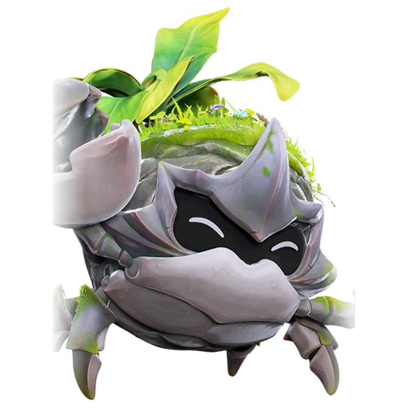

รายชื่อ Aniimo › #024

ปูไม้พุ่ม (Shrubclaw)
#024ธาตุพืช / ดินNovaBreakTier C
พืชเขียวชอุ่มที่คลุมกระดองเปลี่ยนแสงแดดเป็นสารอาหาร วันที่แดดดีจึงไม่ต้องกินอะไรเลย
ดูรายละเอียดเต็ม ร่างพิเศษ และร่างเปล่งประกายค่าสถานะพื้นฐาน
| HP | 95 |
|---|---|
| ATK | 80 |
| P.DEF | 109 |
| M.DEF | 77 |
| REGEN | 85 |
| BREAK | 104 |
สกิล
| โจมตีปกติ | ATK ดิน (BREAK) ใช้พลังดินโจมตีเป้าหมายระยะประชิด |
| สกิล 1 | Leaf Slash พืช หมุนใบไม้รอบตัว ทำดาเมจต่อเนื่อง 5.5 วินาที |
| สกิล 2 | Charged Blow ดิน ยกก้ามขึ้นชาร์จพลัง เมื่อชาร์จเต็มหรือกดสกิลอีกครั้ง จะฟาดเร็ว 2 ครั้ง เคลื่อนที่ได้ขณะชาร์จ |
| สกิล 3 | Verdant Beam พืช ยิงลำแสงพลังงานไปทางที่กล้องหันอยู่ ทำดาเมจเป้าหมายในระยะต่อเนื่อง ยิ่งโดนติดกัน พลังยิ่งเพิ่มขึ้นทีละน้อย |
| อัลติเมต | Quake Impact ดิน พุ่งทะลุพื้นดินออกมา สร้างคลื่นกระแทกเป็นวงกว้าง |
สายวิวัฒนาการ
- ปูหน่ออ่อน → ปูไม้พุ่ม (Aniimo เลเวล 21)
จุดเกิด
- Berylline Vale Lv. 40–47
Held Item ที่แนะนำ
- Gargantuan Horn Aniimo ที่สวมใส่ได้ BREAK เพิ่ม 0.7 ต่อเลเวล
งานใน Homeland
งานธาตุพืช Lv.2, งานธาตุดิน Lv.3, ขนของ Lv.3